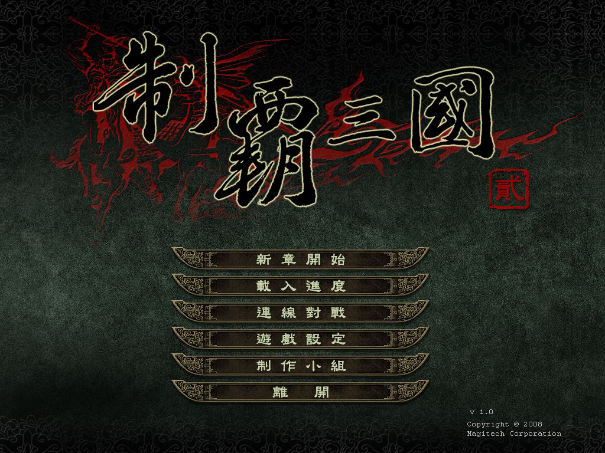
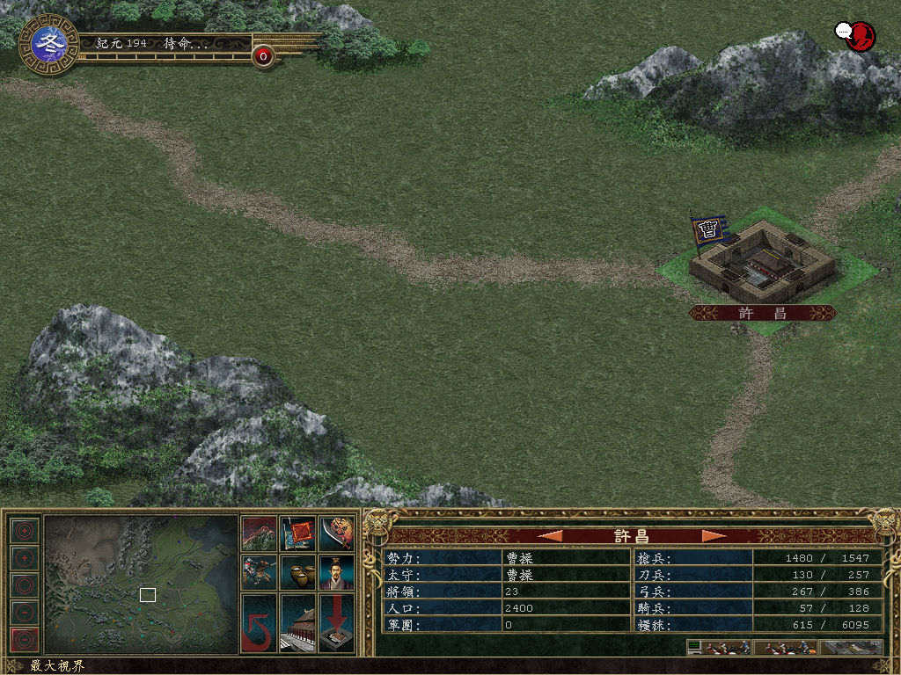

名稱：制霸三國2 (The Chronicles of the Three Kingdoms 2，中文版)
簡介：Magitech 2008年出品的回合策略遊戲，由1C代理發行，台灣由美思捷達中文化並代理
發行 [待補]。


保護：光碟，破解碼：
K5.exe
84 C0 75 5B 8B 0D
-- -- EB -- -- --
備註：VirtualBox無法執行，VMware地形底圖會顯示不出來，建議使用Win64實機執行。
備註：遊戲需要d3dx9_28.dll